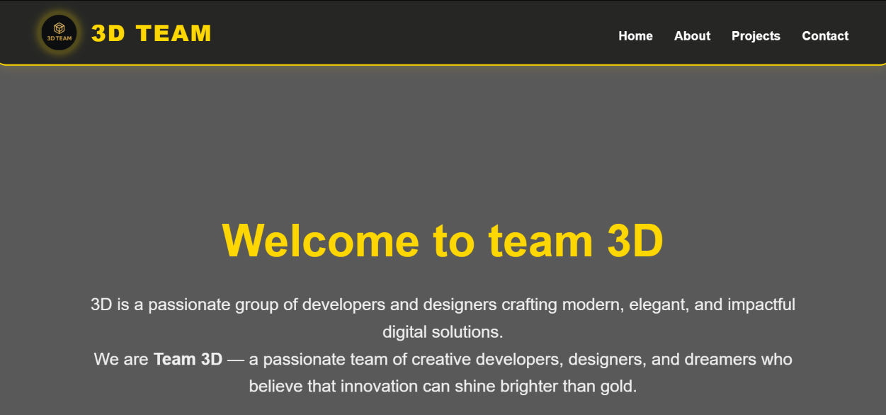

Smart To-Do List
A simple web app for keeping track of daily tasks in one place.
I like turning problems I see around me into practical tools.
See my projectsI’m a third-year software engineering student at Jimma Institute of Technology (JiT). I learn by building real projects and solving real problems. I’m passionate about using practical skills to solve problems in my community.
I’m in my third year of software engineering, building skills that last instead of chasing trends.
With my team, I developed a concept for a digital clearance system for Jimma University, and a student survey to test the problem. It is at the concept stage.
I’m building this site step by step to learn the whole process, from design to deployment.
I’m learning backend development and databases so I can build complete products, not only interfaces.
I want to understand every line I ship, and use AI to move faster, not to replace my thinking.
I want to solve problems people around me really have. ClearCampus is one example.
A simple web app for keeping track of daily tasks in one place.

A website that presents our team’s identity, work and projects. I built the complete user interface.
A digital clearance system idea for university students. Clearance today is slow and paper-based. The concept note and a student survey are done, and a minimum viable product is planned.
Want to work together, or just say hi? Reach out.